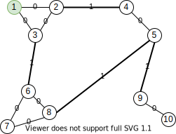
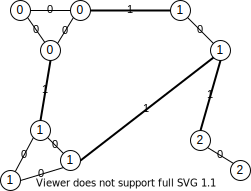
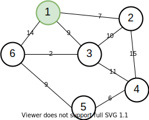
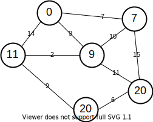

単一始点最短経路¶
幅優先探索(BFS)¶
次の条件を満たす有向・無向グラフについて、ある1つのノード (始点) から他のすべてのノードまでの最短経路を求めるアルゴリズム。
辺の重みがない、もしくはすべて等しい
計算量は頂点数 \(V\) と辺の数 \(E\) を用いて \(\mathcal{O}(V+E)\) と表される。
アルゴリズム¶
辺の重みがない場合は次の通り。
始点 \(s\) を訪問済みにする。\(visited(s) \leftarrow true\) 。
始点をキュー \(Q\) に加える。
\(Q\) が空になるまで繰り返す:
\(Q\) からノードを1つ取り出し、これを \(u\) とする。
\(u\) の隣接ノードを順に走査する:
隣接ノードのうちまだ訪れていないノード \(v\) を選ぶ。
\(v\) を訪問済みにする。\(visited(v) \leftarrow true\) 。
\(v\) を \(Q\) に加える。
辺の重み \(w\) があるときは、\(visited(v) \leftarrow true\) のかわりに \(cost(v) \leftarrow cost(u) + w\) とすればよい。
アルゴリズムの解説¶
以下、ノード \(u\) 内の数字は \(cost(u)\) を表すものとする。
コスト \(w=1\) とした場合、\(cost(u)\) は上図のように始点からの距離と一致する。
実装¶
キューの実装にはdequeを利用する。要素の出し入れの方向に注意。
[1]:
from collections import deque
def bfs(N, G, start = 1, INF = 10**7):
cost = [INF] * (N+1)
q = deque()
cost[start] = 0
q.append(start)
while q:
u = q.popleft()
for v in G[u]:
if cost[v] > cost[u] + 1:
cost[v] = cost[u] + 1
q.append(v)
return cost
[2]:
N = 8
G = [[], [2,5,6], [1], [6,4], [3,8], [1], [1,3,4], [8], [4,7]]
bfs(N, G, start=1)[1:]
[2]:
[0, 1, 2, 2, 1, 1, 4, 3]
0-1-BFS¶
重み \(0\) の辺で行ける隣接ノードはキューの先頭に加える
重み \(1\) の辺で行ける隣接ノードノードは(通常のBFSと同様に)キューの末尾に加える
キューにDequeを使用すれば、BFSと同じ計算量 \(\mathcal{O}(V+E)\) で最短経路を求めることができる。
例えば、次のグラフ

に対して0-1-bfsを適用すると、0の辺を使う経路が優先的に選ばれることにより、次のように最短経路が求まる。

実装¶
キューの実装には、通常のBFSと同じくdequeを利用する。
[3]:
from collections import deque
def zero_one_bfs(N, G, start = 1, INF = 10**7):
cost = [INF] * (N+1)
q = deque()
cost[start] = 0
q.append(start)
while q:
u = q.popleft()
for v in G[u].keys():
if G[u][v] == 0 and cost[v] > cost[u]:
cost[v] = cost[u]
q.appendleft(v)
elif G[u][v] == 1 and cost[v] > cost[u] + 1:
cost[v] = cost[u] + 1
q.append(v)
return cost
[4]:
N = 10
G = [
{},
{2: 0, 3: 0}, {1: 0, 4: 1}, {1: 0, 6: 1},
{2: 1, 5: 0}, {4: 0, 8: 1, 9: 1},
{3: 1, 7: 0, 8: 0}, {6: 0, 8: 0}, {5: 1, 6: 0, 7: 0},
{5: 1, 10: 0}, {9: 0}
]
zero_one_bfs(N, G, start=1)[1:]
[4]:
[0, 0, 0, 1, 1, 1, 1, 1, 2, 2]
Dijkstra法¶
この手法は一般に、Dijkstra法と呼ばれる。
例えば、次のグラフ

に対してDijkstraを適用すると、次のように最短経路が求まる。

実装¶
キューの実装にはheapqを利用する。
[5]:
from heapq import heappush, heappop
def dijkstra(N, G, start = 1, INF = 10**7):
cost = [INF] * (N+1)
q = []
cost[start] = 0
heappush(q, (cost[start], start))
while q:
_, u = heappop(q)
for v in G[u].keys():
if cost[v] > cost[u] + G[u][v]:
cost[v] = cost[u] + G[u][v]
heappush(q, (cost[v], v))
return cost
[6]:
N = 6
G = [
{},
{2: 7, 3: 9, 6: 14}, {1: 7, 3: 10, 4: 15},
{1: 9, 2: 10, 4: 11, 6: 2}, {2: 15, 3: 11, 5: 6},
{4: 6, 6: 9}, {1: 14, 3: 2, 5: 9}
]
dijkstra(N, G, start=1)[1:]
[6]:
[0, 7, 9, 20, 20, 11]
経路出力¶
BFSやDijkstraで算出した移動コストを元に最短経路を出力するには、次の規則に従って終点から始点に向かって移動すればよい。
ノード \(u\) を終点とする。
\(u\) が始点になるまで以下を繰り返す:
ノード \(u\) の隣接ノード \(v\) について、 \(cost[u] = cost[v] + G[u][v]\) が成り立つ隣接ノードに移動する。
\(u \leftarrow v\) とする。
重みのないグラフに対して経路出力するには、辺の重みを1と仮定すればよい。
[7]:
def trace_route(N, G, cost, start, end):
u = end
route = [u]
while u != start:
for v in G[u].keys():
if cost[u] == cost[v] + G[u][v]:
u = v
break
route.append(u)
return route[::-1]
[8]:
N = 6
G = [
{},
{2: 7, 3: 9, 6: 14}, {1: 7, 3: 10, 4: 15},
{1: 9, 2: 10, 4: 11, 6: 2}, {2: 15, 3: 11, 5: 6},
{4: 6, 6: 9}, {1: 14, 3: 2, 5: 9}
]
cost = dijkstra(N, G, start=1)
print(trace_route(N, G, cost, start=1, end=5))
[1, 3, 6, 5]